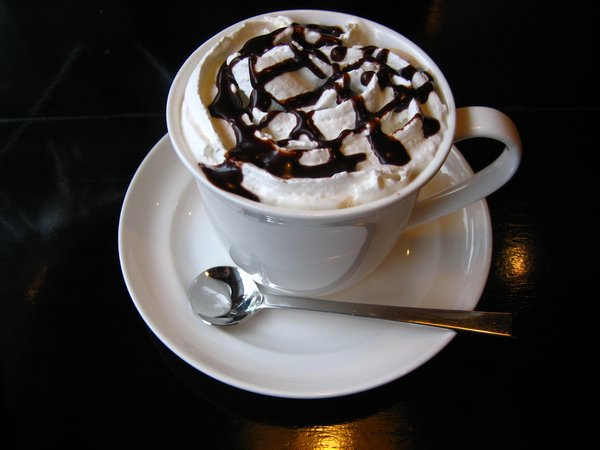

Back to the homepage
Coffee Love
Coffee



Coffee lovers come to associate the energizing lift of the caffeine with the richness and aroma of the beverage that delivers it.
The chemicals alluded to above – and their countless interactions during roasting and brewing – are responsible for the taste, aroma and other qualities by which we judge a cup of coffee. Coffee tasters have catalogued hundreds of distinct aromas and flavors in coffee. Each cup of coffee you drink is unique, the result of a process begun in the nutrient-rich soil in which coffee beans are grown and accomplished only after meticulous processing and roasting when the ground coffee is combined with hot water. Along the way, the flavor and aroma of coffee are affected by hundreds of factors.
| Menu |
Price |
| Affogato |
RM6.50 |
| Espresso |
RM4.50 |
| Cafe Mocha |
RM5.00 |
| Cafe Latte |
RM5.00 |
| Flat White |
RM5.50 |
next pages